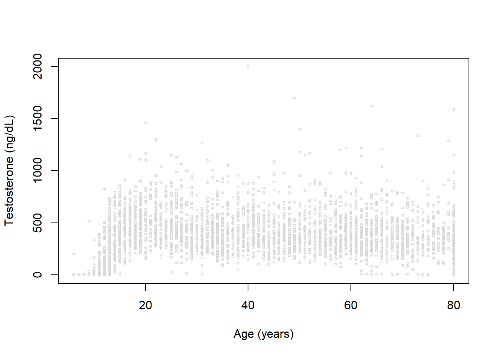
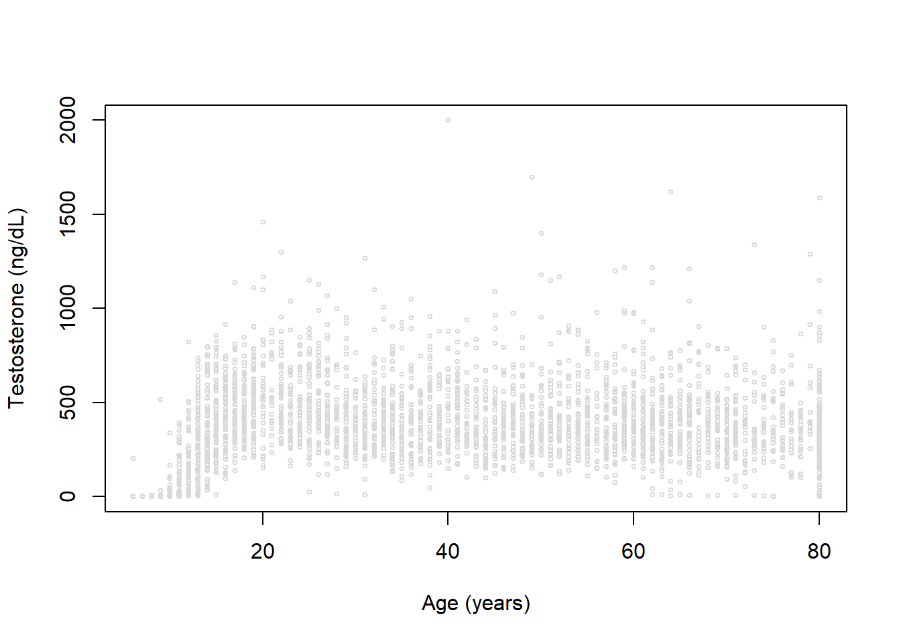
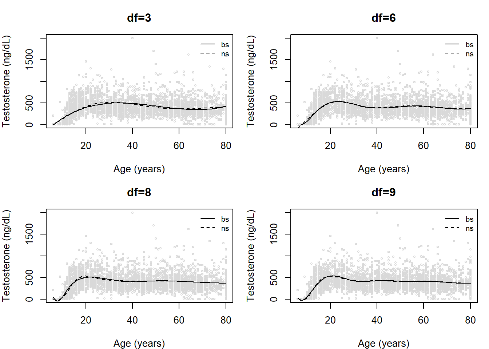
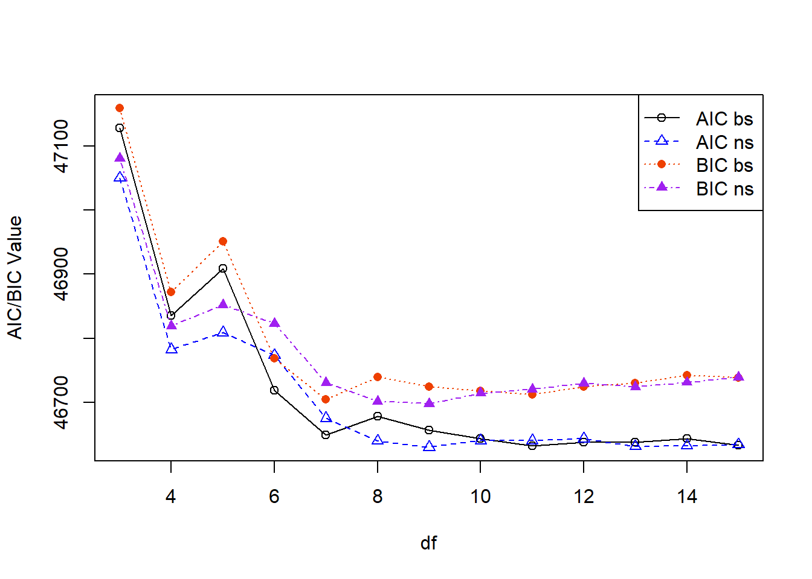
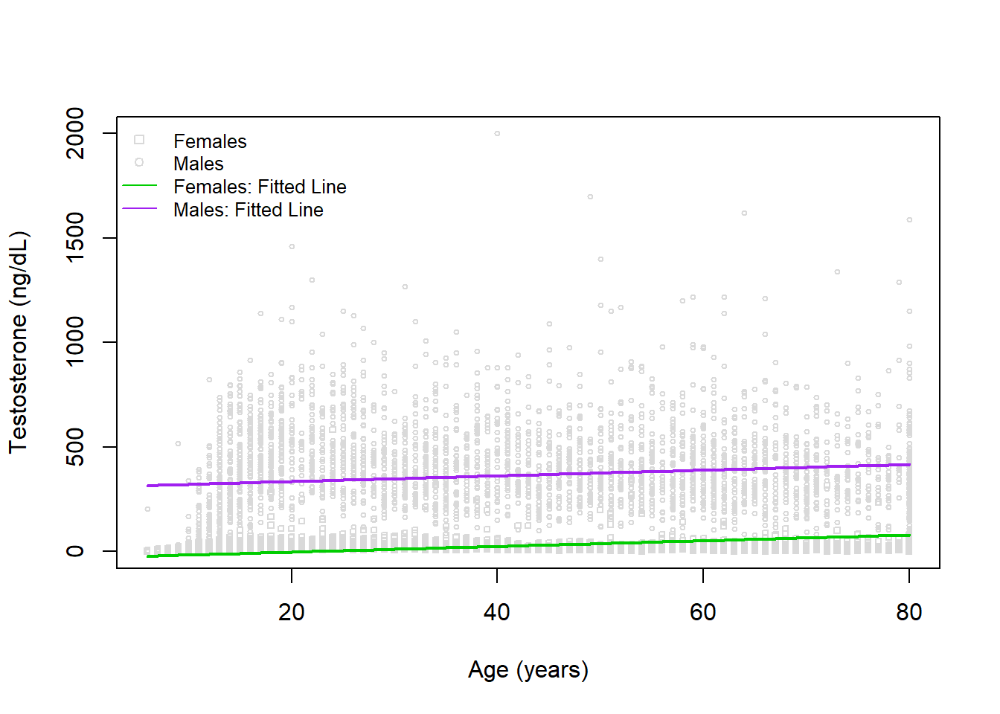
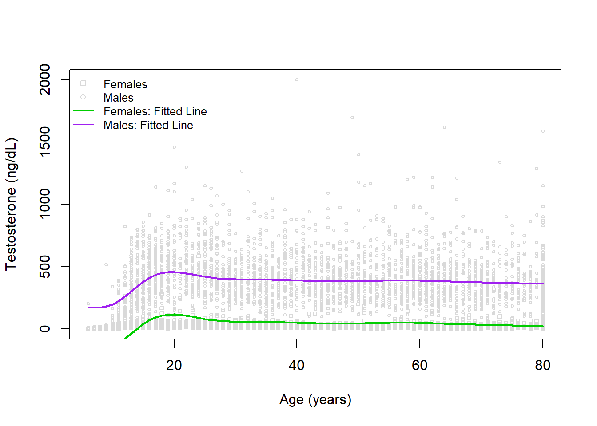
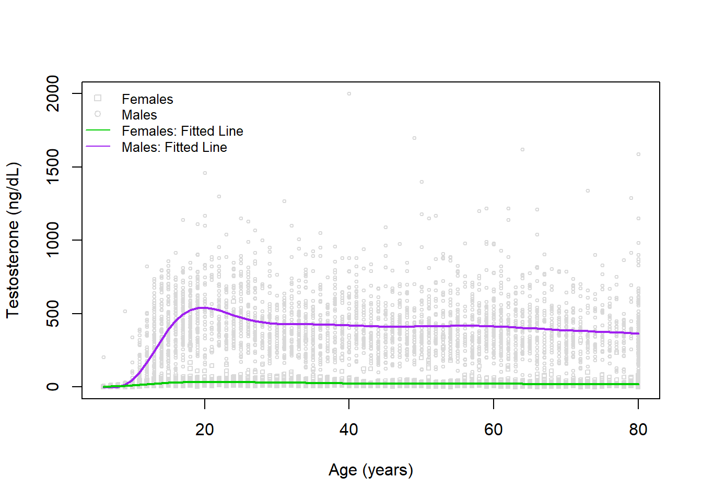

Code
dat <- read.csv('../../.data/nhanes1516_sexhormone.csv')
datm <- dat[which(dat$MALE==TRUE),] # subset to males
plot(x=datm$RIDAGEYR, y=datm$TESTOSTERONE, xlab='Age (years)', ylab='Testosterone (ng/dL)', col='gray85', cex=0.5)
Alex Kaizer
University of Colorado-Anschutz Medical Campus
This page is part of the University of Colorado-Anschutz Medical Campus’ BIOS 6618 Recitation collection. To view other questions, you can view the BIOS 6618 Recitation collection page or use the search bar to look for keywords.
In our lecture slides we noted:
The B-spline basis is a common spline basis and can be fit in R using the splines::bs() function.
The B-spline basis is based on the knot sequence: \[\begin{align*} \xi_1 \leq \cdots & \leq \xi_d \leq \color{red}{\xi_{d+1}} < \color{blue}{\xi_{d+2}} < \cdots \color{blue}{\xi_{d+K+1}} \\ & < \color{red}{\xi_{d+K+2}} \leq \xi_{d+K+3} \leq \cdots \leq \xi_{2d+K+2} \end{align*}\]
The “inner knots” are represented by \(\color{blue}{\xi_{d+2}} = \tau_1, \cdots, \color{blue}{\xi_{d+K+1}}=\tau_K\).
The “boundary knots” are defined as \(\color{red}{\xi_{d+1}}=a\) and \(\color{red}{\xi_{d+K+2}}=b\).
The choice of additional knots \(\xi_1, \cdots, \xi_d\) and \(\xi_{d+K+3}, \cdots, \xi_{2d+K+2}\) is somewhat arbitrary, with a common strategy being to set them equal to the boundary knots.
The reason we set these additional knots before and after the boundary knots (even if we set them to be identical) is to assist in defining appropriate basis functions for each segment of our data (i.e., between any two knots). This could be thought of as a mathematical trick to ensure certain properties of the B-spline are maintained, but the specific mathematical details go beyond the material for our class.
In our lecture we also mentioned approaches to selecting optimal spline parameters:
We’ve seen examples of visual evaluation already, so we’ll explore some approaches using model selection criteria. Let’s revisit our NHANES data example focusing on modeling testosterone in males:

We again see a clearly non-linear trend for age and testosterone. Let’s fit a range of models with different degrees of freedom (3, 4, and 5) using B-splines and natural cubic splines:
library(splines)
# create empty lists to store results in
bs_list <- ns_list <- list()
# loop through degrees of freedom of 3 to 15 and save model
for( df in 3:15 ){
bs_list[[(df-2)]] <- lm( TESTOSTERONE ~ bs(RIDAGEYR, df=df), data=datm)
ns_list[[(df-2)]] <- lm( TESTOSTERONE ~ ns(RIDAGEYR, df=df), data=datm)
}Let’s plot some of these trends:
newdatm <- data.frame( RIDAGEYR = 6:80 )
par(mfrow=c(2,2), mar=c(4,4,3,1))
# df=3
plot(x=datm$RIDAGEYR, y=datm$TESTOSTERONE, xlab='Age (years)', ylab='Testosterone (ng/dL)', col='gray85', cex=0.5, main='df=3')
lines(x=newdatm$RIDAGEYR, y=predict(bs_list[[1]], newdata=newdatm))
lines(x=newdatm$RIDAGEYR, y=predict(ns_list[[1]], newdata=newdatm), lty=2)
legend('topright', col=c('black','black'), lty=c(1,2), legend=c('bs','ns'), bty='n', cex=0.8)
# df=6
plot(x=datm$RIDAGEYR, y=datm$TESTOSTERONE, xlab='Age (years)', ylab='Testosterone (ng/dL)', col='gray85', cex=0.5, main='df=6')
lines(x=newdatm$RIDAGEYR, y=predict(bs_list[[4]], newdata=newdatm))
lines(x=newdatm$RIDAGEYR, y=predict(ns_list[[4]], newdata=newdatm), lty=2)
legend('topright', col=c('black','black'), lty=c(1,2), legend=c('bs','ns'), bty='n', cex=0.8)
# df=8
plot(x=datm$RIDAGEYR, y=datm$TESTOSTERONE, xlab='Age (years)', ylab='Testosterone (ng/dL)', col='gray85', cex=0.5, main='df=8')
lines(x=newdatm$RIDAGEYR, y=predict(bs_list[[6]], newdata=newdatm))
lines(x=newdatm$RIDAGEYR, y=predict(ns_list[[6]], newdata=newdatm), lty=2)
legend('topright', col=c('black','black'), lty=c(1,2), legend=c('bs','ns'), bty='n', cex=0.8)
# df=9
plot(x=datm$RIDAGEYR, y=datm$TESTOSTERONE, xlab='Age (years)', ylab='Testosterone (ng/dL)', col='gray85', cex=0.5, main='df=9')
lines(x=newdatm$RIDAGEYR, y=predict(bs_list[[7]], newdata=newdatm))
lines(x=newdatm$RIDAGEYR, y=predict(ns_list[[7]], newdata=newdatm), lty=2)
legend('topright', col=c('black','black'), lty=c(1,2), legend=c('bs','ns'), bty='n', cex=0.8)
Visually evaluating the figures, we might think df=3 looks pretty decent (expect, perhaps, at the younger ages). The fit at lower ages is improved as we increase the degrees of freedom. We also might wish to compare the B-spline and the natural cubic splines within any degree of freedom.
One approach is to use model selection criteria. Let’s examine a table and plot of our values for AIC and BIC:
# estimate AIC
aic_bs <- sapply(1:13, function(x) AIC(bs_list[[x]]))
aic_ns <- sapply(1:13, function(x) AIC(ns_list[[x]]))
# estimate BIC
bic_bs <- sapply(1:13, function(x) BIC(bs_list[[x]]))
bic_ns <- sapply(1:13, function(x) BIC(ns_list[[x]]))
# table of values
tbl <- cbind(aic_bs,aic_ns,bic_bs,bic_ns)
rownames(tbl) <- 3:15
tbl # print aic_bs aic_ns bic_bs bic_ns
3 47127.87 47050.22 47158.71 47081.05
4 46835.47 46782.66 46872.48 46819.66
5 46908.45 46808.94 46951.62 46852.11
6 46719.40 46773.75 46768.74 46823.09
7 46648.94 46675.38 46704.44 46730.89
8 46678.38 46640.07 46740.05 46701.74
9 46657.13 46630.35 46724.97 46698.19
10 46644.05 46640.55 46718.06 46714.55
11 46632.50 46640.48 46712.67 46720.65
12 46637.82 46643.75 46724.16 46730.09
13 46637.86 46631.73 46730.37 46724.24
14 46643.69 46632.61 46742.36 46731.29
15 46633.49 46634.43 46738.33 46739.27There is a lot going on here. To help us identify the “best” model using AIC or BIC, let’s take the minimum AIC or BIC observed across both B-splines and natural cubic splines and compare:
aic_bs aic_ns bic_bs bic_ns
3 497.5 419.9 460.5 382.9
4 205.1 152.3 174.3 121.5
5 278.1 178.6 253.4 153.9
6 89.0 143.4 70.5 124.9
7 18.6 45.0 6.3 32.7
8 48.0 9.7 41.9 3.6
9 26.8 0.0 26.8 0.0
10 13.7 10.2 19.9 16.4
11 2.1 10.1 14.5 22.5
12 7.5 13.4 26.0 31.9
13 7.5 1.4 32.2 26.0
14 13.3 2.3 44.2 33.1
15 3.1 4.1 40.1 41.1With these results and a rule of thumb of decreases in AIC or BIC greater than 4, we notice:
However, it may also be useful to visualize if there is a point where we might start to experience “diminishing returns” for increasing our model complexity (and risking overfitting the data). Here we can plot the AIC and BIC for each method and degree of freedom:
# plot of values
plot(x=3:15, y=aic_bs, xlab='df', ylab='AIC/BIC Value', type='o', ylim=range(c(aic_bs,aic_ns,bic_bs,bic_ns)))
lines(x=3:15, y=aic_ns, pch=2, lty=2, col='blue', type='o')
lines(x=3:15, y=bic_bs, pch=16, lty=3, col='orangered2', type='o')
lines(x=3:15, y=bic_ns, pch=17, lty=4, col='purple', type='o')
legend('topright', lty=1:4, pch=c(1,2,16,17), col=c('black','blue','orangered2','purple'), legend=c('AIC bs','AIC ns','BIC bs','BIC ns'))
Some takeaways here:
We’ve discussed the challenges of interpreting polynomial and spline models when our primary explanatory variable of interest is the one with the nonlinear trend. Here we will explore a model with both sex and age to see how interpretations may be affected.
Let’s revisit our NHANES data example focusing on modeling testosterone, but this time in males and females and plot one multiple linear regression model with sex and age:
Call:
lm(formula = TESTOSTERONE ~ RIDAGEYR + MALE, data = dat)
Residuals:
Min 1Q Median 3Q Max
-414.52 -51.93 -1.23 36.92 1638.21
Coefficients:
Estimate Std. Error t value Pr(>|t|)
(Intercept) -30.34926 4.20501 -7.217 5.84e-13 ***
RIDAGEYR 1.36133 0.08384 16.237 < 2e-16 ***
MALETRUE 337.68353 3.79058 89.085 < 2e-16 ***
---
Signif. codes: 0 '***' 0.001 '**' 0.01 '*' 0.05 '.' 0.1 ' ' 1
Residual standard error: 160.9 on 7204 degrees of freedom
(814 observations deleted due to missingness)
Multiple R-squared: 0.5318, Adjusted R-squared: 0.5316
F-statistic: 4091 on 2 and 7204 DF, p-value: < 2.2e-16The interpretations of our beta coefficients here are easy to interpret:
We can visualize, however, that this isn’t likely the best fit:
# create variable to change point type by sex
dat$pch <- 1
dat$pch[which(dat$MALE==FALSE)] <- 0
# create plot
plot(x=dat$RIDAGEYR, y=dat$TESTOSTERONE, xlab='Age (years)', ylab='Testosterone (ng/dL)', col='gray85', cex=0.5, pch=dat$pch)
legend('topleft', bty='n', pch=c(0,1,NA,NA), lty=c(NA,NA,1,1), legend=c('Females','Males','Females: Fitted Line','Males: Fitted Line'), col=c('gray85','gray85','green3','purple'), cex=0.8)
# add regression fits
newdat_male <- data.frame( RIDAGEYR=6:80, MALE=TRUE)
newdat_female <- data.frame( RIDAGEYR=6:80, MALE=FALSE)
lines(x=6:80, y=predict(mod1, newdata=newdat_male), col='purple', lwd=2)
lines(x=6:80, y=predict(mod1, newdata=newdat_female), col='green3', lwd=2)
Indeed, the fits are in both groups do not appear to be accurately reflecting the trend with age. Let’s try fitting a model with a natural cubic spline used for age next.
Here we will add a natural cubic spline to age with a degree of freedom of 8 (based on our other question evaluating spline calibration):
Call:
lm(formula = TESTOSTERONE ~ ns(RIDAGEYR, df = 8) + MALE, data = dat)
Residuals:
Min 1Q Median 3Q Max
-395.19 -64.77 -26.38 51.29 1610.36
Coefficients:
Estimate Std. Error t value Pr(>|t|)
(Intercept) -168.282 8.954 -18.79 <2e-16 ***
ns(RIDAGEYR, df = 8)1 356.634 12.141 29.38 <2e-16 ***
ns(RIDAGEYR, df = 8)2 218.216 15.274 14.29 <2e-16 ***
ns(RIDAGEYR, df = 8)3 232.027 13.689 16.95 <2e-16 ***
ns(RIDAGEYR, df = 8)4 202.993 14.118 14.38 <2e-16 ***
ns(RIDAGEYR, df = 8)5 225.764 13.394 16.86 <2e-16 ***
ns(RIDAGEYR, df = 8)6 203.791 11.424 17.84 <2e-16 ***
ns(RIDAGEYR, df = 8)7 192.410 21.816 8.82 <2e-16 ***
ns(RIDAGEYR, df = 8)8 194.185 8.674 22.39 <2e-16 ***
MALETRUE 339.050 3.428 98.91 <2e-16 ***
---
Signif. codes: 0 '***' 0.001 '**' 0.01 '*' 0.05 '.' 0.1 ' ' 1
Residual standard error: 145.3 on 7197 degrees of freedom
(814 observations deleted due to missingness)
Multiple R-squared: 0.6183, Adjusted R-squared: 0.6178
F-statistic: 1295 on 9 and 7197 DF, p-value: < 2.2e-16The interpretations of our sex coefficient is still easy to interpret, but age not so much:
Interestingly, we do have a similar sex difference estimated between our two models. Visually, this looks like:
# create plot
plot(x=dat$RIDAGEYR, y=dat$TESTOSTERONE, xlab='Age (years)', ylab='Testosterone (ng/dL)', col='gray85', cex=0.5, pch=dat$pch)
legend('topleft', bty='n', pch=c(0,1,NA,NA), lty=c(NA,NA,1,1), legend=c('Females','Males','Females: Fitted Line','Males: Fitted Line'), col=c('gray85','gray85','green3','purple'), cex=0.8)
# add regression fits
lines(x=6:80, y=predict(mod2, newdata=newdat_male), col='purple', lwd=2)
lines(x=6:80, y=predict(mod2, newdata=newdat_female), col='green3', lwd=2)
While a little better, there does appear to be an issue with assuming the the sex difference is constant across ages. We can try to account for this by including an interaction term in our next model.
Here we will add an interaction between sex and age (with a spline) from our previous model:
Call:
lm(formula = TESTOSTERONE ~ ns(RIDAGEYR, df = 8) * MALE, data = dat)
Residuals:
Min 1Q Median 3Q Max
-449.07 -18.74 -4.24 9.12 1580.21
Coefficients:
Estimate Std. Error t value Pr(>|t|)
(Intercept) 0.9041 10.8171 0.084 0.9334
ns(RIDAGEYR, df = 8)1 37.6509 15.0955 2.494 0.0126 *
ns(RIDAGEYR, df = 8)2 30.8584 18.5139 1.667 0.0956 .
ns(RIDAGEYR, df = 8)3 27.0448 16.8762 1.603 0.1091
ns(RIDAGEYR, df = 8)4 18.3903 17.1403 1.073 0.2833
ns(RIDAGEYR, df = 8)5 21.6196 16.5372 1.307 0.1911
ns(RIDAGEYR, df = 8)6 15.4002 14.1725 1.087 0.2772
ns(RIDAGEYR, df = 8)7 29.5792 26.8170 1.103 0.2701
ns(RIDAGEYR, df = 8)8 13.2040 10.6445 1.240 0.2148
MALETRUE -3.9349 15.4732 -0.254 0.7993
ns(RIDAGEYR, df = 8)1:MALETRUE 635.7286 21.3614 29.761 <2e-16 ***
ns(RIDAGEYR, df = 8)2:MALETRUE 390.8591 26.9133 14.523 <2e-16 ***
ns(RIDAGEYR, df = 8)3:MALETRUE 410.8437 24.0858 17.058 <2e-16 ***
ns(RIDAGEYR, df = 8)4:MALETRUE 386.2810 24.8818 15.525 <2e-16 ***
ns(RIDAGEYR, df = 8)5:MALETRUE 408.8234 23.5709 17.344 <2e-16 ***
ns(RIDAGEYR, df = 8)6:MALETRUE 378.7641 20.1017 18.842 <2e-16 ***
ns(RIDAGEYR, df = 8)7:MALETRUE 341.0139 38.3930 8.882 <2e-16 ***
ns(RIDAGEYR, df = 8)8:MALETRUE 359.5488 15.2690 23.548 <2e-16 ***
---
Signif. codes: 0 '***' 0.001 '**' 0.01 '*' 0.05 '.' 0.1 ' ' 1
Residual standard error: 127.8 on 7189 degrees of freedom
(814 observations deleted due to missingness)
Multiple R-squared: 0.705, Adjusted R-squared: 0.7044
F-statistic: 1011 on 17 and 7189 DF, p-value: < 2.2e-16While interactions can be challenging to interpret, when it is an interaction with a spline (or polynomial) we once again cannot have a simple interpretation since within each sex there is a difference in testosterone with age.
Visually, this looks like:
# create plot
plot(x=dat$RIDAGEYR, y=dat$TESTOSTERONE, xlab='Age (years)', ylab='Testosterone (ng/dL)', col='gray85', cex=0.5, pch=dat$pch)
legend('topleft', bty='n', pch=c(0,1,NA,NA), lty=c(NA,NA,1,1), legend=c('Females','Males','Females: Fitted Line','Males: Fitted Line'), col=c('gray85','gray85','green3','purple'), cex=0.8)
# add regression fits
lines(x=6:80, y=predict(mod3, newdata=newdat_male), col='purple', lwd=2)
lines(x=6:80, y=predict(mod3, newdata=newdat_female), col='green3', lwd=2)
Here we have a great looking model! If we wanted to do a numerical check that this model is an improvement (even if hard to interpret), we could calculate something like the AIC or BIC:
[1] 93688.00 92228.98 90387.20[1] 93715.53 92304.70 90517.97Both AIC and BIC agree the most complex model is an improvement over any of the simpler models.
---
title: "Splines in Linear Regression"
author:
name: Alex Kaizer
roles: "Instructor"
affiliation: University of Colorado-Anschutz Medical Campus
toc: true
toc_float: true
toc-location: left
format:
html:
code-fold: show
code-overflow: wrap
code-tools: true
---
```{r, echo=F, message=F, warning=F}
library(kableExtra)
library(dplyr)
```
This page is part of the University of Colorado-Anschutz Medical Campus' [BIOS 6618 Recitation](/recitation/index.qmd) collection. To view other questions, you can view the [BIOS 6618 Recitation](/recitation/index.qmd) collection page or use the search bar to look for keywords.
# Splines
## Why Extra Knots?
In our lecture slides we noted:
The B-spline basis is a common spline basis and can be fit in `R` using the `splines::bs()` function.
The B-spline basis is based on the knot sequence:
\begin{align*}
\xi_1 \leq \cdots & \leq \xi_d \leq \color{red}{\xi_{d+1}} < \color{blue}{\xi_{d+2}} < \cdots \color{blue}{\xi_{d+K+1}} \\
& < \color{red}{\xi_{d+K+2}} \leq \xi_{d+K+3} \leq \cdots \leq \xi_{2d+K+2}
\end{align*}
The "inner knots" are represented by $\color{blue}{\xi_{d+2}} = \tau_1, \cdots, \color{blue}{\xi_{d+K+1}}=\tau_K$.
The "boundary knots" are defined as $\color{red}{\xi_{d+1}}=a$ and $\color{red}{\xi_{d+K+2}}=b$.
The choice of additional knots $\xi_1, \cdots, \xi_d$ and $\xi_{d+K+3}, \cdots, \xi_{2d+K+2}$ is somewhat arbitrary, with a common strategy being to set them equal to the boundary knots.
The reason we set these additional knots before and after the boundary knots (even if we set them to be identical) is to assist in defining appropriate basis functions for each segment of our data (i.e., between any two knots). This could be thought of as a mathematical trick to ensure certain properties of the B-spline are maintained, but the specific mathematical details go beyond the material for our class.
## Selecting Optimal Parameters
In our lecture we also mentioned approaches to selecting optimal spline parameters:
- Use of visual evaluation (e.g., seeing that the data does not appear to be overfit)
- Model selection criterion (e.g., AIC, AICc, BIC, etc.) to compare models with different parameters (minimized AIC is preferred)
- Cross validation (CV) by dividing the $N$ data points into $K$ groups/folds for train/test set evaluation
We've seen examples of visual evaluation already, so we'll explore some approaches using model selection criteria. Let's revisit our NHANES data example focusing on modeling testosterone in males:
```{r}
dat <- read.csv('../../.data/nhanes1516_sexhormone.csv')
datm <- dat[which(dat$MALE==TRUE),] # subset to males
plot(x=datm$RIDAGEYR, y=datm$TESTOSTERONE, xlab='Age (years)', ylab='Testosterone (ng/dL)', col='gray85', cex=0.5)
```
We again see a clearly non-linear trend for age and testosterone. Let's fit a range of models with different degrees of freedom (3, 4, and 5) using B-splines and natural cubic splines:
```{r}
library(splines)
# create empty lists to store results in
bs_list <- ns_list <- list()
# loop through degrees of freedom of 3 to 15 and save model
for( df in 3:15 ){
bs_list[[(df-2)]] <- lm( TESTOSTERONE ~ bs(RIDAGEYR, df=df), data=datm)
ns_list[[(df-2)]] <- lm( TESTOSTERONE ~ ns(RIDAGEYR, df=df), data=datm)
}
```
Let's plot some of these trends:
```{r, class.source = 'fold-hide'}
#| code-fold: true
newdatm <- data.frame( RIDAGEYR = 6:80 )
par(mfrow=c(2,2), mar=c(4,4,3,1))
# df=3
plot(x=datm$RIDAGEYR, y=datm$TESTOSTERONE, xlab='Age (years)', ylab='Testosterone (ng/dL)', col='gray85', cex=0.5, main='df=3')
lines(x=newdatm$RIDAGEYR, y=predict(bs_list[[1]], newdata=newdatm))
lines(x=newdatm$RIDAGEYR, y=predict(ns_list[[1]], newdata=newdatm), lty=2)
legend('topright', col=c('black','black'), lty=c(1,2), legend=c('bs','ns'), bty='n', cex=0.8)
# df=6
plot(x=datm$RIDAGEYR, y=datm$TESTOSTERONE, xlab='Age (years)', ylab='Testosterone (ng/dL)', col='gray85', cex=0.5, main='df=6')
lines(x=newdatm$RIDAGEYR, y=predict(bs_list[[4]], newdata=newdatm))
lines(x=newdatm$RIDAGEYR, y=predict(ns_list[[4]], newdata=newdatm), lty=2)
legend('topright', col=c('black','black'), lty=c(1,2), legend=c('bs','ns'), bty='n', cex=0.8)
# df=8
plot(x=datm$RIDAGEYR, y=datm$TESTOSTERONE, xlab='Age (years)', ylab='Testosterone (ng/dL)', col='gray85', cex=0.5, main='df=8')
lines(x=newdatm$RIDAGEYR, y=predict(bs_list[[6]], newdata=newdatm))
lines(x=newdatm$RIDAGEYR, y=predict(ns_list[[6]], newdata=newdatm), lty=2)
legend('topright', col=c('black','black'), lty=c(1,2), legend=c('bs','ns'), bty='n', cex=0.8)
# df=9
plot(x=datm$RIDAGEYR, y=datm$TESTOSTERONE, xlab='Age (years)', ylab='Testosterone (ng/dL)', col='gray85', cex=0.5, main='df=9')
lines(x=newdatm$RIDAGEYR, y=predict(bs_list[[7]], newdata=newdatm))
lines(x=newdatm$RIDAGEYR, y=predict(ns_list[[7]], newdata=newdatm), lty=2)
legend('topright', col=c('black','black'), lty=c(1,2), legend=c('bs','ns'), bty='n', cex=0.8)
```
Visually evaluating the figures, we might think df=3 looks pretty decent (expect, perhaps, at the younger ages). The fit at lower ages is improved as we increase the degrees of freedom. We also might wish to compare the B-spline and the natural cubic splines within any degree of freedom.
One approach is to use model selection criteria. Let's examine a table and plot of our values for AIC and BIC:
```{r}
# estimate AIC
aic_bs <- sapply(1:13, function(x) AIC(bs_list[[x]]))
aic_ns <- sapply(1:13, function(x) AIC(ns_list[[x]]))
# estimate BIC
bic_bs <- sapply(1:13, function(x) BIC(bs_list[[x]]))
bic_ns <- sapply(1:13, function(x) BIC(ns_list[[x]]))
# table of values
tbl <- cbind(aic_bs,aic_ns,bic_bs,bic_ns)
rownames(tbl) <- 3:15
tbl # print
```
There is a lot going on here. To help us identify the "best" model using AIC or BIC, let's take the minimum AIC or BIC observed across both B-splines and natural cubic splines and compare:
```{r}
diff <- tbl - matrix(rep(c(min(tbl[,c('aic_bs','aic_ns')]),min(tbl[,c('bic_bs','bic_ns')])), each=nrow(tbl)*2), ncol=4, byrow=F)
round(diff,1)
```
With these results and a rule of thumb of decreases in AIC or BIC greater than 4, we notice:
- For AIC, the natural cubic spline model with df=9 minimizes the AIC. Models within 4 of this include:
- df=11 B-spline ($\Delta=2.1$)
- df=15 B-spline ($\Delta=3.1$)
- df=13 natural cubic spline ($\Delta=1.4$)
- df=14 natural cubic spline ($\Delta=2.3$)
- However, all these models have higher degrees of freedom and are less parsimonious.
- For BIC, the natural cubic spline model with df=9 minimizes the BIC. Models within 4 of this include:
- df=8 natural cubic spline ($\Delta=3.6$)
- Since df=8 has fewer degrees of freedom, could select it instead of df=9 because it is slightly more parsimonious
However, it may also be useful to visualize if there is a point where we might start to experience "diminishing returns" for increasing our model complexity (and risking overfitting the data). Here we can plot the AIC and BIC for each method and degree of freedom:
```{r}
# plot of values
plot(x=3:15, y=aic_bs, xlab='df', ylab='AIC/BIC Value', type='o', ylim=range(c(aic_bs,aic_ns,bic_bs,bic_ns)))
lines(x=3:15, y=aic_ns, pch=2, lty=2, col='blue', type='o')
lines(x=3:15, y=bic_bs, pch=16, lty=3, col='orangered2', type='o')
lines(x=3:15, y=bic_ns, pch=17, lty=4, col='purple', type='o')
legend('topright', lty=1:4, pch=c(1,2,16,17), col=c('black','blue','orangered2','purple'), legend=c('AIC bs','AIC ns','BIC bs','BIC ns'))
```
Some takeaways here:
- Around df=7 we stop seeing larger changes (there is still some moving around, e.g., B-splines do increase from df=7 to 8 before decreasing again). So, we might consider choosing df=7 even though it wasn't "optimal" based on the change in AIC or BIC from above.
- We can see that BIC (solid points) is larger than the AIC (open points) values, where both natural cubic splines and B-splines seem to converge to very similar results at larger degrees of freedom.
- In practice there are many ways we could justify the choice of different splines, degrees of freedom, or choice across other models.
## Model Interpretation with Splines
We've discussed the challenges of interpreting polynomial and spline models when our primary explanatory variable of interest is the one with the nonlinear trend. Here we will explore a model with both sex and age to see how interpretations may be affected.
### MLR with Sex and Age
Let's revisit our NHANES data example focusing on modeling testosterone, but this time in males and females and plot one multiple linear regression model with sex and age:
```{r}
dat <- read.csv('../../.data/nhanes1516_sexhormone.csv')
# fit MLR
mod1 <- lm( TESTOSTERONE ~ RIDAGEYR + MALE, data=dat )
summary(mod1)
```
The interpretations of our beta coefficients here are easy to interpret:
- Age: For a 1 year increase in age, testosterone increases by an average of 1.36 ng/dL after adjusting for sex.
- Sex: Testosterone is an average of 337.68 ng/dL higher in males than females after adjusting for age.
We can visualize, however, that this isn't likely the best fit:
```{r}
# create variable to change point type by sex
dat$pch <- 1
dat$pch[which(dat$MALE==FALSE)] <- 0
# create plot
plot(x=dat$RIDAGEYR, y=dat$TESTOSTERONE, xlab='Age (years)', ylab='Testosterone (ng/dL)', col='gray85', cex=0.5, pch=dat$pch)
legend('topleft', bty='n', pch=c(0,1,NA,NA), lty=c(NA,NA,1,1), legend=c('Females','Males','Females: Fitted Line','Males: Fitted Line'), col=c('gray85','gray85','green3','purple'), cex=0.8)
# add regression fits
newdat_male <- data.frame( RIDAGEYR=6:80, MALE=TRUE)
newdat_female <- data.frame( RIDAGEYR=6:80, MALE=FALSE)
lines(x=6:80, y=predict(mod1, newdata=newdat_male), col='purple', lwd=2)
lines(x=6:80, y=predict(mod1, newdata=newdat_female), col='green3', lwd=2)
```
Indeed, the fits are in both groups do not appear to be accurately reflecting the trend with age. Let's try fitting a model with a natural cubic spline used for age next.
### Sex and Age with Natural Cubic Spline
Here we will add a natural cubic spline to age with a degree of freedom of 8 (based on our other question evaluating spline calibration):
```{r}
library(splines)
# fit MLR
mod2 <- lm( TESTOSTERONE ~ ns(RIDAGEYR,df=8) + MALE, data=dat )
summary(mod2)
```
The interpretations of our sex coefficient is still easy to interpret, but age not so much:
- Age: Given the splines, the rate of change in testosterone values will depend on the age we are comparing to.
- Sex: Testosterone is an average of 339.05 ng/dL higher in males than females after adjusting for age.
Interestingly, we do have a similar sex difference estimated between our two models. Visually, this looks like:
```{r}
# create plot
plot(x=dat$RIDAGEYR, y=dat$TESTOSTERONE, xlab='Age (years)', ylab='Testosterone (ng/dL)', col='gray85', cex=0.5, pch=dat$pch)
legend('topleft', bty='n', pch=c(0,1,NA,NA), lty=c(NA,NA,1,1), legend=c('Females','Males','Females: Fitted Line','Males: Fitted Line'), col=c('gray85','gray85','green3','purple'), cex=0.8)
# add regression fits
lines(x=6:80, y=predict(mod2, newdata=newdat_male), col='purple', lwd=2)
lines(x=6:80, y=predict(mod2, newdata=newdat_female), col='green3', lwd=2)
```
While a little better, there does appear to be an issue with assuming the the sex difference is constant across ages. We can try to account for this by including an interaction term in our next model.
### Sex and Age with Natural Cubic Spline and Their Interaction
Here we will add an interaction between sex and age (with a spline) from our previous model:
```{r}
library(splines)
# fit MLR
mod3 <- lm( TESTOSTERONE ~ ns(RIDAGEYR,df=8) * MALE, data=dat )
summary(mod3)
```
While interactions can be challenging to interpret, when it is an interaction with a spline (or polynomial) we once again cannot have a simple interpretation since within each sex there is a difference in testosterone with age.
Visually, this looks like:
```{r}
# create plot
plot(x=dat$RIDAGEYR, y=dat$TESTOSTERONE, xlab='Age (years)', ylab='Testosterone (ng/dL)', col='gray85', cex=0.5, pch=dat$pch)
legend('topleft', bty='n', pch=c(0,1,NA,NA), lty=c(NA,NA,1,1), legend=c('Females','Males','Females: Fitted Line','Males: Fitted Line'), col=c('gray85','gray85','green3','purple'), cex=0.8)
# add regression fits
lines(x=6:80, y=predict(mod3, newdata=newdat_male), col='purple', lwd=2)
lines(x=6:80, y=predict(mod3, newdata=newdat_female), col='green3', lwd=2)
```
Here we have a great looking model! If we wanted to do a numerical check that this model is an improvement (even if hard to interpret), we could calculate something like the AIC or BIC:
```{r}
c(AIC(mod1),AIC(mod2),AIC(mod3))
c(BIC(mod1),BIC(mod2),BIC(mod3))
```
Both AIC and BIC agree the most complex model is an improvement over any of the simpler models.